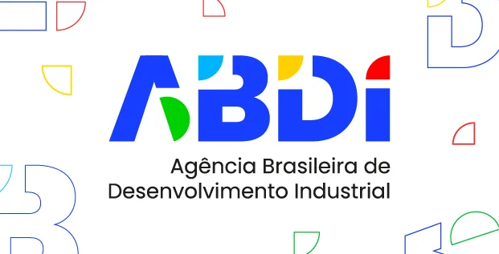

01
Coleta passiva
O paciente assiste a vídeos com interações sociais enquanto registramos, com precisão, seus dados de atenção visual⁵.
Metodologia já aceita pela comunidade científica, sustentada em mais de 300 artigos. Não invasiva, rápida e 90% mais barata que as tecnologias disponíveis hoje.
O gasto global com autismo já alcança trilhões de dólares anualmente — valores cada vez mais altos justamente por conta do diagnóstico tardio. A fila pelo atendimento especializado dura de um a dois anos, e a tecnologia atual praticamente não chega às populações que mais precisam.
A criança apenas assiste a um vídeo. O resto é ciência de dados.
O paciente assiste a vídeos com interações sociais enquanto registramos, com precisão, seus dados de atenção visual⁵.
Os dados coletados são comparados com padrões de atenção de pacientes autistas e neurotípicos descritos em mais de 300 estudos⁶.
Identificamos sinais precoces de TEA e geramos um relatório clínico objetivo, com score de risco pronto para apoiar a decisão profissional.
Mapas de atenção de uma mesma cena social. A diferença é mensurável — e reproduzível.
A atenção converge para a região ocular do interlocutor — base da reciprocidade social.

A atenção se desloca para regiões não sociais — boca, contorno, objetos de fundo — padrão consistente em populações TEA.

Sem sensores acoplados, sem desconforto. Apenas uma câmera e um vídeo.
5 minutos de sessão. Relatório em minutos, não em meses de fila.
90% mais barato que as tecnologias disponíveis hoje no mercado.
Onde o sistema falha em populações de baixa escolaridade, onde a fila especializada dura um a dois anos, o resultado está pronto em minutos. Onde a tecnologia não chega a quem realmente precisa, a SpotSpec é construída desde o primeiro dia com a diversidade do país e desenhada para chegar tanto à clínica particular quanto à unidade básica do SUS.
Aplicada às 3 milhões de crianças nascidas por ano, a SpotSpec pode antecipar em três a cinco anos o diagnóstico para dezenas de milhares de crianças autistas anualmente, devolvendo o fator isolado mais determinante do prognóstico: o tempo. Mais escolas regulares, mais autonomia, mais vidas adultas independentes. Menos sofrimento familiar, menos endividamento, menos passivo de assistência vitalícia.
É um banco de dados que reescreve a ciência mundial do autismo a partir do Sul global. A SpotSpec quer ser, para o autismo, o que o teste do pezinho foi para a fenilcetonúria: uma triagem universal, rápida, barata e objetiva, aplicada a toda criança na primeira infância.
